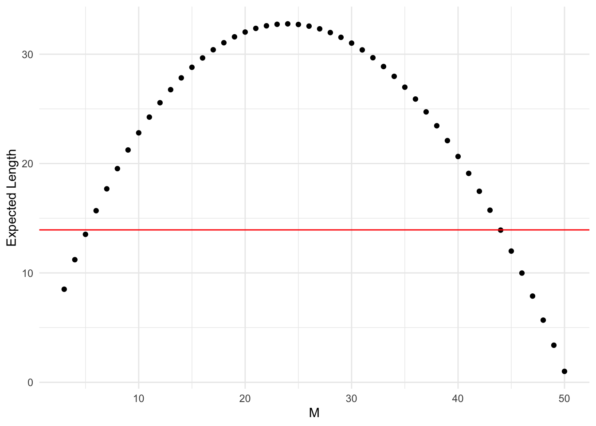
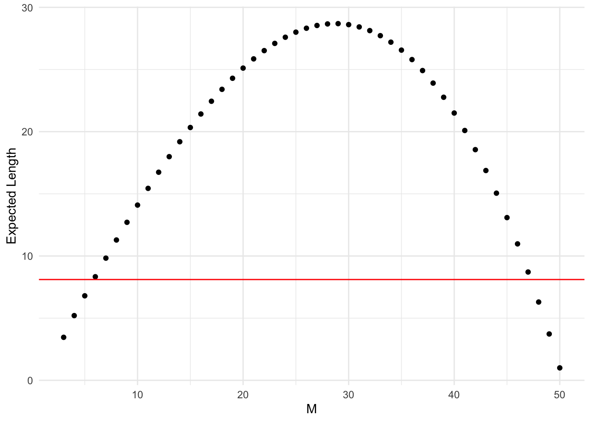
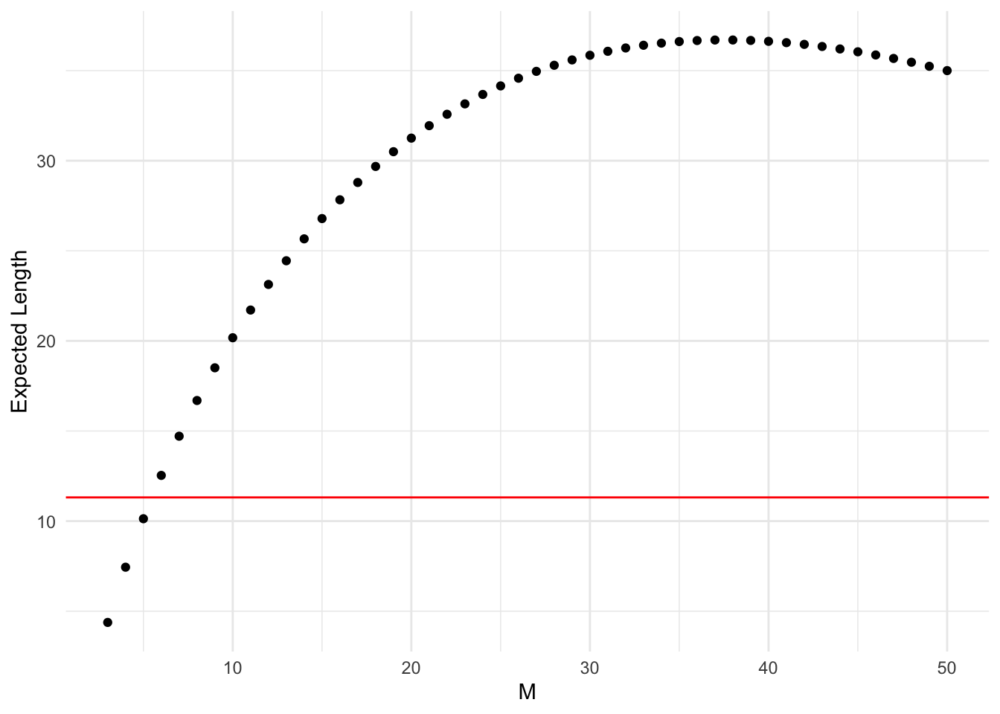
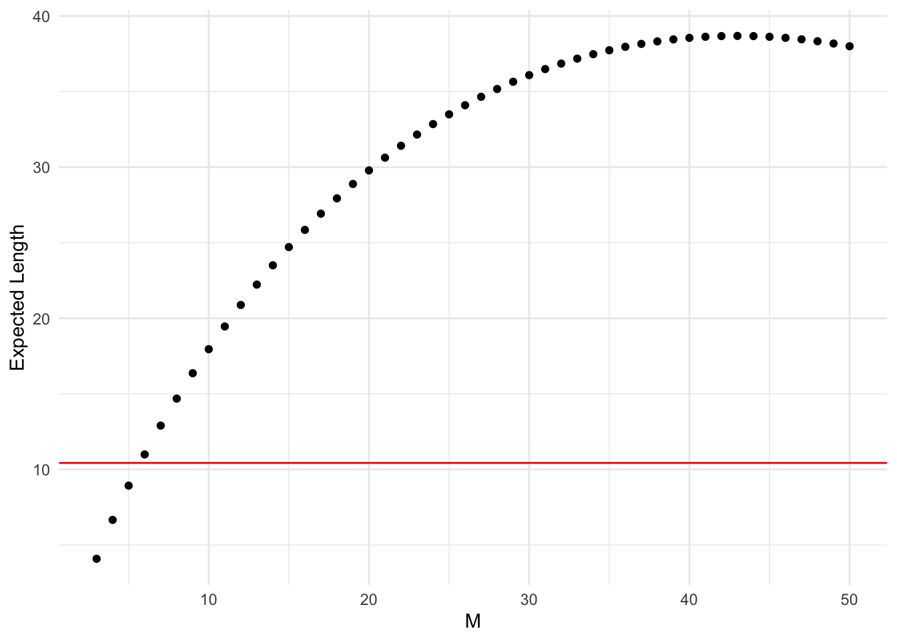
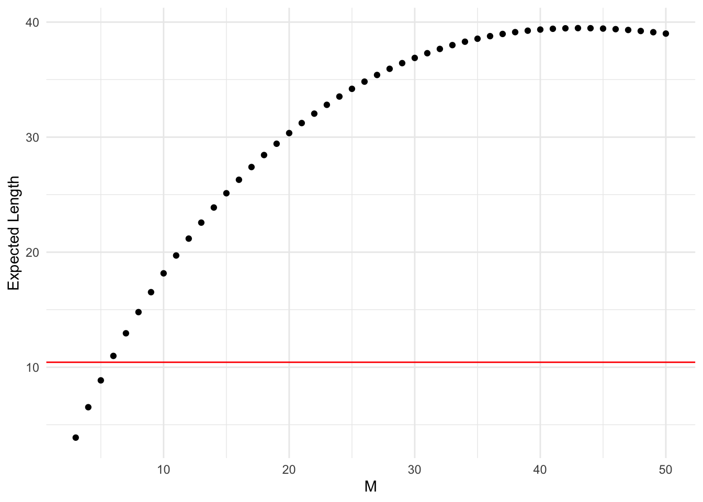
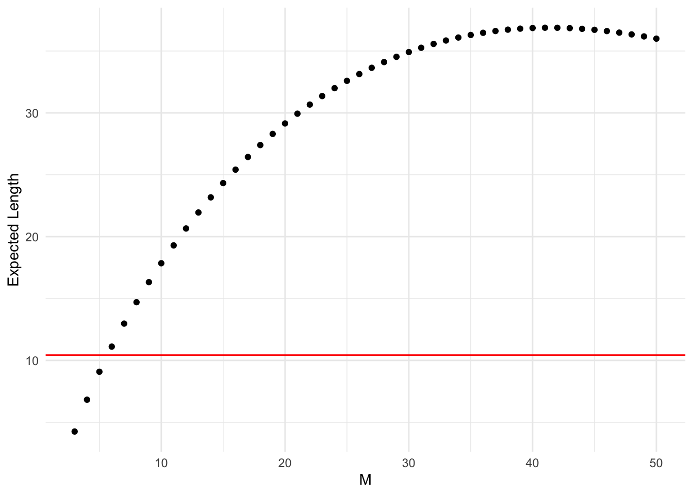
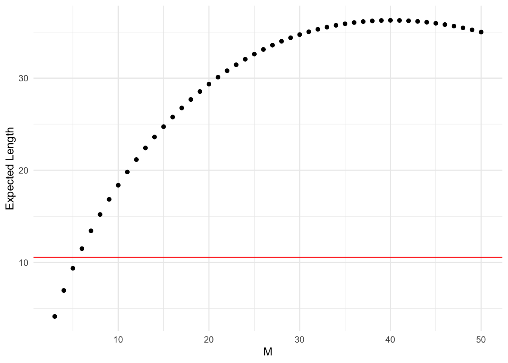

── Attaching core tidyverse packages ──────────────────────── tidyverse 2.0.0 ──
✔ dplyr 1.1.3 ✔ readr 2.1.4
✔ forcats 1.0.0 ✔ stringr 1.5.0
✔ ggplot2 3.4.3 ✔ tibble 3.2.1
✔ lubridate 1.9.2 ✔ tidyr 1.3.0
✔ purrr 1.0.2
── Conflicts ────────────────────────────────────────── tidyverse_conflicts() ──
✖ dplyr::filter() masks stats::filter()
✖ dplyr::lag() masks stats::lag()
✖ purrr::rdunif() masks extraDistr::rdunif()
ℹ Use the conflicted package (<http://conflicted.r-lib.org/>) to force all conflicts to become errors
source('functions.R', encoding ='UTF-8')
Expected Length
expected_length <-function(data_frame, lb_col_name, ub_col_name, N, M, m) { sum =0for (xi in0:(N - M)) { length = data_frame[[ub_col_name]][data_frame$x == xi] - data_frame[[lb_col_name]][data_frame$x == xi] +1 prob =ngh_pmf(x = xi, N = N, M = M, m = m) indiv = length * prob sum = sum + indiv }return(sum)}
The average length is the same for the minimal cardinality procedures. This is because they are choosing choosing between acceptance sets of minimal cardinality (so the same minimal length). The only difference is between which minimal cardinality sets are being chosen, but the length of them is the same since they are minimal cardinality. Thus, the average length is the same for the minimal cardinality procedures.
Therefore, Modified Sterne (MST) is considered superior because they all have the same average length, but MST chooses the acceptance sets with the highest coverage probability, so with the same length as the other minimal cardinality procedures, MST is getting the most coverage.
Plot of Expected and Average Length
First Initialize N, m, and confidence level!
N =50m =3conf_level =0.95
Normal Approximation (MLE)
data =CI_cov_prob_MLE(N = N, m = m, conf_level = conf_level)average_length(data, "lower_bound", "upper_bound")
[1] 13.93484
# Create a data frame to store the resultsresults =data.frame(M =integer(), ExpectedLength =numeric())# Calculate expected length for each Mfor (M_i in m:N) { exp_len =expected_length(data, "lower_bound", "upper_bound", N = N, M = M_i, m = m) results =rbind(results, data.frame(M = M_i, ExpectedLength = exp_len))}# Plot using ggplot2ggplot(results, aes(x = M, y = ExpectedLength)) +geom_point() +geom_hline(yintercept =average_length(data, "lower_bound", "upper_bound"), color ="red") +labs(x ="M", y ="Expected Length") +theme_minimal()

Normal Approximation (Unbiased)
data =CI_cov_prob_unbiased(N = N, m = m, conf_level = conf_level)average_length(data, "lower_bound", "upper_bound")
[1] 8.105834
# Create a data frame to store the resultsresults =data.frame(M =integer(), ExpectedLength =numeric())# Calculate expected length for each Mfor (M_i in m:50) { exp_len =expected_length(data, "lower_bound", "upper_bound", N = N, M = M_i, m = m) results =rbind(results, data.frame(M = M_i, ExpectedLength = exp_len))}# Plot using ggplot2ggplot(results, aes(x = M, y = ExpectedLength)) +geom_point() +geom_hline(yintercept =average_length(data, "lower_bound", "upper_bound"), color ="red") +labs(x ="M", y ="Expected Length") +theme_minimal()

Analog to Clopper Pearson
data =CI_cov_prob(N = N, m = m, conf_level = conf_level)average_length(data, "lower_bound", "upper_bound")
[1] 11.31373
# Create a data frame to store the resultsresults =data.frame(M =integer(), ExpectedLength =numeric())# Calculate expected length for each Mfor (M_i in m:N) { exp_len =expected_length(data, "lower_bound", "upper_bound", N = N, M = M_i, m = m) results =rbind(results, data.frame(M = M_i, ExpectedLength = exp_len))}# Plot using ggplot2ggplot(results, aes(x = M, y = ExpectedLength)) +geom_point() +geom_hline(yintercept =average_length(data, "lower_bound", "upper_bound"), color ="red") +labs(x ="M", y ="Expected Length") +theme_minimal()

MST
data =minimal_cardinality_ci(N = N, m = m, conf_level = conf_level, procedure ="MST")average_length(data, "ci_lb", "ci_ub")
[1] 10.43137
# Create a data frame to store the resultsresults =data.frame(M =integer(), ExpectedLength =numeric())# Calculate expected length for each Mfor (M_i in m:N) { exp_len =expected_length(data, "ci_lb", "ci_ub", N = N, M = M_i, m = m) results =rbind(results, data.frame(M = M_i, ExpectedLength = exp_len))}# Plot using ggplot2ggplot(results, aes(x = M, y = ExpectedLength)) +geom_point() +geom_hline(yintercept =average_length(data, "ci_lb", "ci_ub"), color ="red") +labs(x ="M", y ="Expected Length") +theme_minimal()

CG
data =minimal_cardinality_ci(N = N, m = m, conf_level = conf_level, procedure ="CG")average_length(data, "ci_lb", "ci_ub")
[1] 10.43137
# Create a data frame to store the resultsresults =data.frame(M =integer(), ExpectedLength =numeric())# Calculate expected length for each Mfor (M_i in m:N) { exp_len =expected_length(data, "ci_lb", "ci_ub", N = N, M = M_i, m = m) results =rbind(results, data.frame(M = M_i, ExpectedLength = exp_len))}# Plot using ggplot2ggplot(results, aes(x = M, y = ExpectedLength)) +geom_point() +geom_hline(yintercept =average_length(data, "ci_lb", "ci_ub"), color ="red") +labs(x ="M", y ="Expected Length") +theme_minimal()

BK
data =minimal_cardinality_ci(N = N, m = m, conf_level = conf_level, procedure ="BK")average_length(data, "ci_lb", "ci_ub")
[1] 10.43137
# Create a data frame to store the resultsresults =data.frame(M =integer(), ExpectedLength =numeric())# Calculate expected length for each Mfor (M_i in m:N) { exp_len =expected_length(data, "ci_lb", "ci_ub", N = N, M = M_i, m = m) results =rbind(results, data.frame(M = M_i, ExpectedLength = exp_len))}# Plot using ggplot2ggplot(results, aes(x = M, y = ExpectedLength)) +geom_point() +geom_hline(yintercept =average_length(data, "ci_lb", "ci_ub"), color ="red") +labs(x ="M", y ="Expected Length") +theme_minimal()

Blaker
data =blaker_ci(N = N, m = m, conf_level = conf_level)average_length(data, "ci_lb", "ci_ub")
[1] 10.54902
# Create a data frame to store the resultsresults =data.frame(M =integer(), ExpectedLength =numeric())# Calculate expected length for each Mfor (M_i in m:N) { exp_len =expected_length(data, "ci_lb", "ci_ub", N = N, M = M_i, m = m) results =rbind(results, data.frame(M = M_i, ExpectedLength = exp_len))}# Plot using ggplot2ggplot(results, aes(x = M, y = ExpectedLength)) +geom_point() +geom_hline(yintercept =average_length(data, "ci_lb", "ci_ub"), color ="red") +labs(x ="M", y ="Expected Length") +theme_minimal()

CMC
data =cmc_ci(N = N, m = m, conf_level = conf_level)average_length(data, "ci_lb", "ci_ub")
[1] 11.72549
# Create a data frame to store the resultsresults =data.frame(M =integer(), ExpectedLength =numeric())# Calculate expected length for each Mfor (M_i in m:N) { exp_len =expected_length(data, "ci_lb", "ci_ub", N = N, M = M_i, m = m) results =rbind(results, data.frame(M = M_i, ExpectedLength = exp_len))}# Plot using ggplot2ggplot(results, aes(x = M, y = ExpectedLength)) +geom_point() +geom_hline(yintercept =average_length(data, "ci_lb", "ci_ub"), color ="red") +labs(x ="M", y ="Expected Length") +theme_minimal()